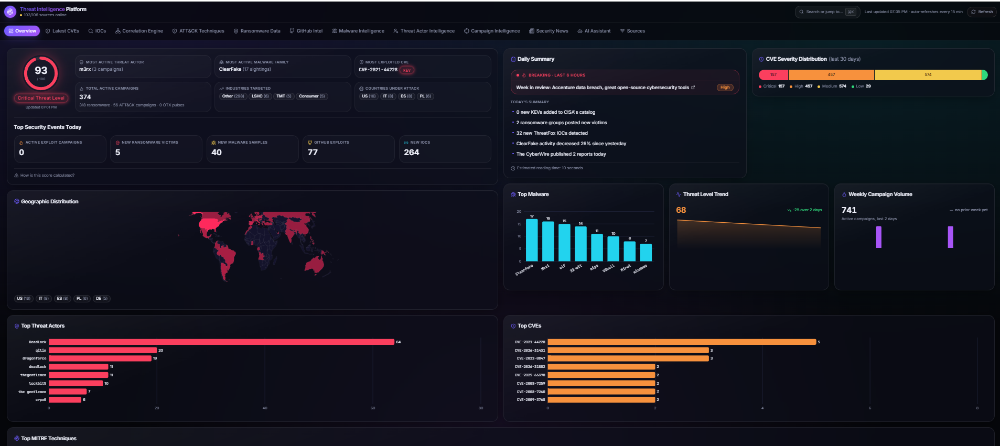

A self-hosted threat intelligence platform that aggregates 100+ public and vendor feeds, correlates them automatically,
and answers analyst questions through a locally-run AI assistant — built and run entirely on free, open infrastructure.
106Live intel sources
4Auto-extraction pipelines
$0Recurring platform cost
100%Data stays on-premises
Product Snapshot

The Overview tab -- live threat score, top malware/actors/CVEs, geographic distribution, and MITRE ATT&CK technique trends, all auto-refreshing every 15 minutes.
Architecture
Servers & Runtime — what it actually runs on
Runtime stack
Four small, well-understood server processes — no exotic infrastructure
Everything runs as ordinary open-source server software. There's no managed cloud service, no proprietary
platform, and no infrastructure a small internal team can't operate itself.
Node.js / Express backend server — the aggregation & correlation service; owns all scheduled syncing, retries, caching, and cross-source correlation logic.
Ollama (local LLM server) — serves both the chat model (llama3.1:8b, with qwen2.5:3b available as a faster option) and the embedding model (nomic-embed-text) over a local API, entirely offline-capable.
Vite dev/build server — serves and bundles the React/TypeScript frontend.
No external database server — state is kept in-process and persisted to local JSON snapshots; at this data volume (a few thousand records) a full database server would be unnecessary overhead.
Where it runs today: all four processes on a single workstation. The Dockerfile already in the repo packages this same stack for an internal server whenever we're ready to move off one machine — same components, just relocated.
The AI Layer — RAG Chatbot
Retrieval-Augmented Generation
Analysts ask questions in plain English; answers are grounded only in our own data
The assistant runs entirely on hardware we control, via Ollama — a free, open-source model runtime. Every
answer is retrieved from the platform's own live intelligence (CVEs, malware, actors, campaigns, ATT&CK
techniques, news) before the model ever generates a response.
No paid API, no external call. The model and the embedding index both run locally — nothing is sent to OpenAI, Anthropic, or any third party.
Grounded, not generative. A similarity threshold means the assistant says "I don't know" rather than guessing when nothing relevant is on file.
Exact-match safeguards for identifiers — a CVE number or ATT&CK technique ID is looked up directly rather than left to approximate semantic search.
Answers questions like: "What is Bumblebee?", "Which malware does FIN7 use?", "Which actors exploit CVE-2025-XXXX?", "Show ransomware groups attacking healthcare."
Automated Intelligence — the real differentiator
Malware Intelligence
Every family, one record
Identifies malware families mentioned in incoming articles automatically, merges duplicate mentions into a single profile, and cross-checks each one against MITRE ATT&CK's official catalog.
Threat Actor Intelligence
Who, and what they use
Detects actor/group names, classifies them (APT, Cybercrime, Ransomware, Hacktivist, Initial Access Broker, Insider), and builds a running profile — aliases, TTPs, targeted industries, associated malware.
Campaign Intelligence
Named operations, tracked
Picks up named operations as vendors report them (e.g. a newly-disclosed supply-chain campaign) and links them back to the actors and malware already on file.
ATT&CK Technique Mapping
TTPs, validated
Extracts specific attacker techniques from coverage and checks every one against the real MITRE catalog, so nothing invented by the model ever reaches an analyst.
Why it matters: none of these four catalogs are manually maintained. They build and update themselves as new
articles arrive, every two minutes, around the clock — turning what used to be analyst-hours of manual tagging into
a background process.
Cost & Hosting
$0 recurring
Built entirely on free and open infrastructure
All 106 data sources are free-tier or fully keyless public feeds — no data licensing costs.
The AI model and embedding engine (Ollama) run locally at no per-query cost — no OpenAI/Anthropic API billing.
No managed vector database — the index is small enough (a few thousand entries) to run in-process.
Current state: running as a local deployment during active development. The application is
container-ready (Dockerfile included) for internal hosting whenever we're ready to move it off a single
workstation — that's a deployment step, not a rebuild.
Likely questions from the room
"Is any of our data leaving the building?"
No. The AI model, the vector index, and all correlation logic run locally. The only outbound traffic is the original fetches from public threat-intel feeds — the same feeds a security team would already consult manually.
"What happens if the model gets something wrong?"
Two layers of protection: the chatbot won't answer at all if nothing relevant is on file, and every automatically-extracted malware/actor/technique is cross-checked against an authoritative source (MITRE ATT&CK) or corroborated across independent sources before it's marked "confirmed" rather than "reported."
"How is this different from buying a commercial threat-intel product?"
Commercial platforms charge per-seat or per-feed subscription fees, often for the same public sources we already ingest for free. The differentiator here is the automatic correlation and entity-extraction layer — most vendors don't auto-build actor/malware/campaign profiles from raw news the way this does.
"What's the path to production?"
Containerize (Dockerfile already exists) and deploy to internal infrastructure. No architectural changes needed — this is a hosting decision, not a re-engineering effort.